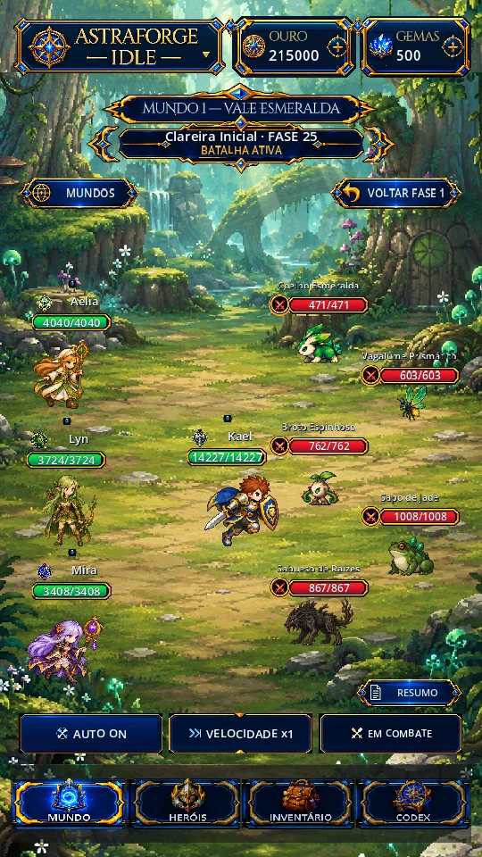
Mundo 1
Bosque dos Brotos
Clareiras e trilhas antigas conduzem aos desafios da Abelha Rainha e da Árvore Monstro. Uma floresta viva e cheia de esperança, onde os primeiros brotos do mundo renascem.
Fases 1–200RPG idle 2D · Pixel art · Android
Forje sua equipe. Enfrente o impossível.
Monte uma formação de cinco heróis, enfrente criaturas de cinco mundos e evolua seus equipamentos. Uma aventura em pixel art para jogar no seu ritmo.
Beta em desenvolvimento · APK disponibilizado pelo GitHub Releases. Consulte a versão disponível antes de instalar.
 Captura real do jogo
Captura real do jogoCOMECE A JOGAR
A versão Beta é distribuída gratuitamente pelo GitHub. Verificamos a Release pública mais recente com APK para mostrar um download válido e suas notas.
Consultar todas as Releases públicas ↗
Evite desinstalar o jogo antes de atualizar, para conservar seu progresso. A instalação sobre a versão anterior exige a mesma assinatura Android.
Confira o espaço disponível no aparelho e baixe o APK novamente se o arquivo estiver incompleto. Atualizações também podem falhar quando a versão instalada usa outra assinatura: nesse caso, não desinstale sem antes garantir um backup do progresso.
Versão pública verificada
Consultando…
Consultando as Releases públicas do projeto.
Um caminho entre ilhas
Da floresta viva às profundezas do Abismo da Corrupção, cada mundo apresenta novos inimigos e decisões de combate.

Mundo 1
Clareiras e trilhas antigas conduzem aos desafios da Abelha Rainha e da Árvore Monstro. Uma floresta viva e cheia de esperança, onde os primeiros brotos do mundo renascem.
Fases 1–200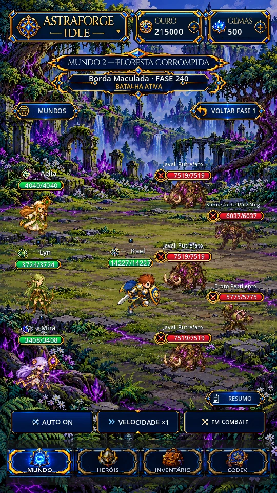
Mundo 2
Raízes tomadas pela corrupção e territórios fúngicos levam à Rainha Fúngica e ao Núcleo da Corrupção. Além dos brotos, a Corrupção alcança as raízes. Uma nova jornada espera por você.
Fases 201–400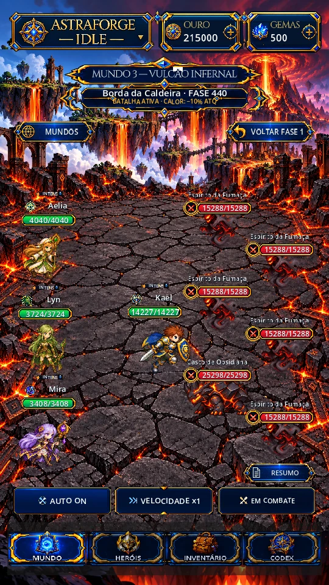
Mundo 3
Caldeiras e forjas suspensas culminam nos confrontos com o Dragão de Fogo, Malkor e o Soberano Infernal. Calor Intenso — Heróis: -10% ATK. Três bosses guardam a Caldeira.
Fases 401–700Mundo 4 · V0.6.0 Beta
Costa, bosque, catedral e cidadela ligam Fenrir à Sacerdotisa de Cristal e ao Rei do Inverno. Gélido nos heróis e servos: cooldowns −15% e velocidade de ataque −15%. Uma ilha de neve até o Trono do Inverno.
Fases 701–1200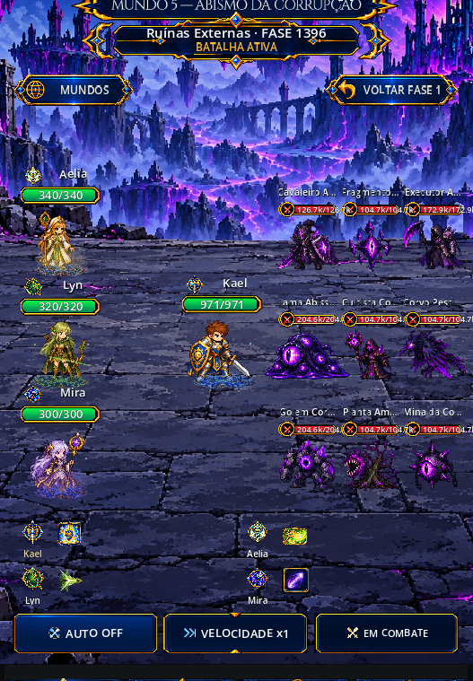
Mundo 5 · V0.7.0 Beta
Das Ruínas Externas ao Santuário Interior, a campanha enfrenta novas espécies, encontros extras e os chefes Beemote Cristalino, Rainha do Abismo e Serafiel.
Fases 1201–1800Em destaque · Mundo 5
Depois das florestas, da caldeira e dos picos gelados, a jornada chega ao Abismo da Corrupção. Prepare sua formação para enfrentar o Beemote Cristalino, a Rainha do Abismo e Serafiel.
Descubra também os novos desafios e sistemas detalhados nas notas da atualização.
Conheça a atualização do Abismo →Sua formação, sua estratégia
Defesa, cura, magia, mobilidade e invocações. Explore os dez heróis do elenco atual e escolha as funções que combinam com sua estratégia. A formação aceita até cinco aliados.
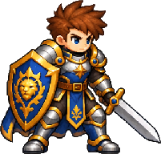
Guerreiro
Tanque / Defesa
Dano físico · tanque / defesa
Avança até o inimigo, golpeia com o escudo e tem chance de atordoar. Retorna à formação após o impacto. Protege Kael e seus aliados, reduzindo o dano recebido. Kael atrai os inimigos e fortalece suas defesas.
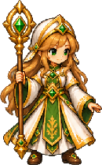
Sacerdotisa
Suporte / Cura
Dano mágico · suporte / cura
Cura todos os aliados e purifica veneno e queimadura. Dispara projéteis naturais contra todos os inimigos vivos.

Arqueira
Dps / Ataques Básicos
Dano físico · dps / ataques básicos
Flecha perfurante causa dano inicial e veneno persistente até purificação ou fim do combate. Três ondas de flechas atingem todos os inimigos. O dano total é dividido entre os impactos.

Maga
Dps / Magia
Dano mágico · dps / magia
Dispara um projétil arcano contra o inimigo causando dano mágico elevado. Cometas em área e queimadura de 0,5% HP/s, limitada pelo MATK e nível da skill. Cura recebida -50%. Usos no mesmo alvo ampliam os meteoros.
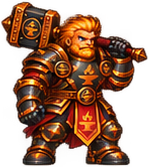
Forjador · Dverin
Tanque / Bruiser
Dano físico · tanque / bruiser
Um golpe de martelo em um inimigo causa dano físico e stun. Alvos imunes ao stun sofrem atraso no próximo ataque. Avança até um inimigo e desfere um golpe físico que reduz sua DEF temporariamente.
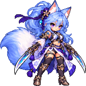
Blade Dancer · Elin
Dps / Mobilidade
Dano físico · dps / mobilidade
Avanço curto e três cortes. Dança Perfeita adiciona um corte. Giro de cinco cortes em área. Dança Perfeita adiciona dois cortes.
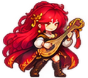
Barda
Suporte / Utilidade
Dano mágico · suporte / utilidade
Sete notas mágicas independentes. Abates diretos concedem Harmonia Fúnebre à equipe por 30s, até cinco acúmulos. Atrai ataques ao aliado de maior HP máximo por 5 s. Cura 50%–77% do HP perdido e reflete 25%–34%, limitada a 50%–95% do MATK atual da Nerissa por golpe. Defesa, escudos e esquiva são respeitados; não reflete dano letal.

Monge Renegado
Off-Tank / Controle
Dano físico · off-tank / controle
Golpe físico em linha. Empurra o primeiro alvo; uma colisão real entre inimigos causa dano extra e stun, uma vez por uso. Avança à retaguarda para interromper uma conjuração. Só aplica silêncio se interromper; retorna à frente protegido.
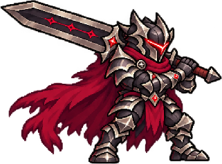
Berserker
Dano físico / Sustentação
Berserker de meio de formação especializado em enfrentar um alvo, acumular marcas de fúria e recuperar vida com ataques diretos. Possui quatro habilidades ativas e duas passivas.

Necromante
Dps / Magia
Dano mágico · dps / magia
Uma maldição por uso: Veneno, Ruína ou Sentença. Prioriza a ausente e depois a menor carga; até três cargas de cada. Renova a duração. Invoca um servo por uso. Executor, Arauto e Bastião; prioriza reanimar um morto. Três vivos bloqueiam o uso. Atributos aumentam com o nível da skill. Servos vivos permanecem entre fases da sessão.
Da batalha à Oficina
01
O combate acontece na campanha. Use habilidades no momento certo ou ative AUTO. Com o avanço automático ligado, a vitória inicia a próxima fase; o auto-farm permite permanecer na fase escolhida.
Posicione sua equipe para proteger a retaguarda, aproveite os efeitos das skills e acompanhe a vida de cada unidade.
02
Gerencie armas, capacetes, armaduras, luvas, botas e acessórios. Compare atributos e escolha peças compatíveis com a classe. Materiais e equipamentos têm filtros próprios.
Nível, habilidades, atributos e ascensão acrescentam novas decisões à evolução de cada personagem.

03
Materiais dos inimigos alimentam fabricação, refino e evolução. Aprenda técnicas permanentes e use a Grande Têmpera para preparar o próximo desafio.
A progressão de equipamento avança junto com os mundos. Combine fabricação, refino e evolução para superar os próximos desafios.
Veja os novos equipamentos →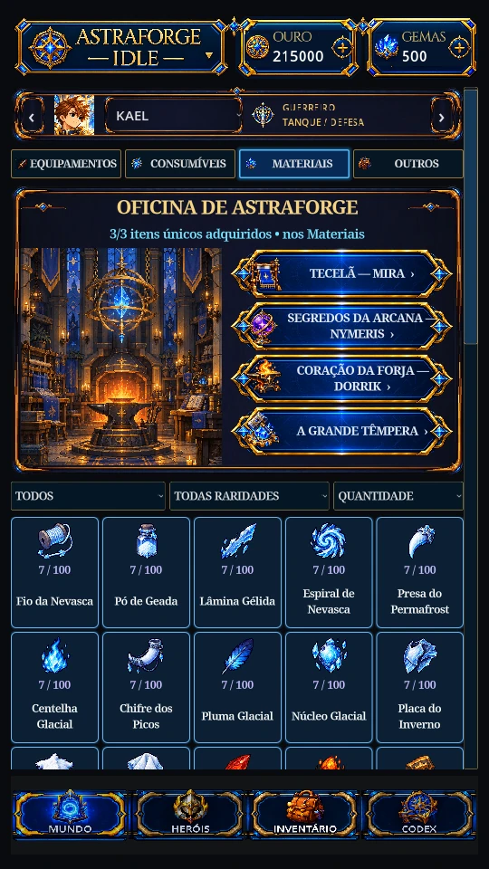
Dentro de Astraforge
Capturas reais da build de revisão no Godot. Toque em uma imagem para ampliar; filtre por combate, equipamentos ou interfaces.
O diário da jornada
Novos capítulos, ajustes de heróis e correções, com notas que continuam disponíveis a cada versão.
Exibida automaticamente a partir da Release pública mais recente com APK.
Hotfix em destaque
V0.7.2
Revisão do dano dos inimigos comuns e da progressão das fases, com balanceamento em observação.
Ler notas V0.7.2 →Hotfix anterior
V0.7.1
Nova fórmula de dano de mobs e bosses, rebalanceamento geral e dificuldade em observação.
Ler notas V0.7.1 →Versão anterior
V0.7.0 Beta
Morvann, Mundo 5, bosses extras, Stoffel, Ascensão Lendária e equipamentos Boreais.
Ler notas V0.7.0 →A jornada continua com você
Conte como foi sua experiência, compartilhe sugestões e ajude a melhorar o Astraforge Idle. Para publicar, entre com sua conta GitHub.
Feedback
Compartilhe impressões sobre os mundos, heróis, evolução e experiência de jogo.
Abrir Discussions ↗Sugestões
Proponha ideias de habilidades, sistemas, equilíbrio e melhorias para versões futuras.
Enviar uma ideia ↗Relatar problemas
Informe a versão do jogo, o dispositivo e como reproduzir o problema para facilitar a correção.
Reportar bug ↗